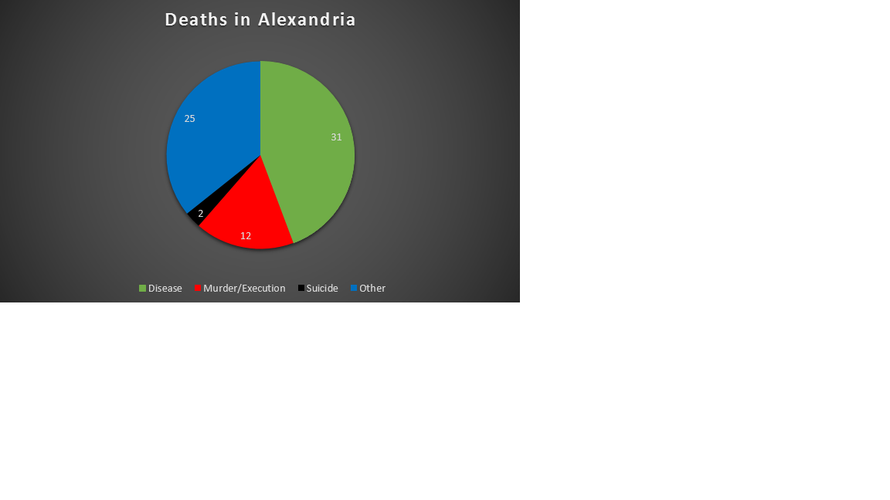

Benjamin Franklin once said that there are only two certainties in life, taxes and death. While the former of these is more of a satirical remark on governmental practices, the latter is a very real thing. Whether it be the worry of meeting an early end on your morning commute or worrying about your weight, death colors most things in life a little darker. In modern society, death is viewed in a multitude of ways. There are those who mourn it, those who celebrate it, and those who treat it as merely a part of life, and this last approach tends to be more common in societies where death itself is more prevalent. Take the early 20th century for example, death was more common, and the rather lackadaisical view of it is prevalent in the writings of the time. The Egyptian Gazette that we have been examining over the course of the semester presents the death of the citizens of Alexandria in this way, but rather than cover their methods, I am more concerned with the deaths themselves. Put simply, I want to find out how many deaths occurred in Alexandria in the year of 1905. In this essay, I will start out by giving a more in depth explanation of this question before moving on to my search methods then move on to the examination of my research.
As I stated in my introduction, the goal of my research is to see how many people died in the city of Alexandria during the year of 1905. However, my research does not merely stop there. Once I have determined the number of the deaths, I want to categorize them. So far, from my preliminary research, I have been able to formulate four basic categories; disease, murders and executions, suicide, and other. The disease category is rather self-explanatory, it includes all citizens killed by disease during the year. Murders and executions I grouped together because most, if not all, of the executions reported on by the Gazette were due to murders. Suicide I believe to be another rather self-explanatory category. It includes the suicides that happened in Alexandria over the given time period. The final category is a bit of an oddball. It includes all other deaths that happened in Alexandria in 1905 whether they be drownings, accidents, or natural causes. I ended up using this sort of “catch-all” category because I found that there were a large number of random or odd deaths that didn’t really fit into their own category. My original plan after completing this stage of the analysis was to build a map and place a color coded marker at the location of each incident. This could have, in theory, allowed me to draw further conclusions in the realms of epidemiology, criminology, and even possibly psychology, but I was unable to find enough locations within the paper to create a both visually appealing and accurate map. In lieu of this concept, I decided to develop a set of charts to display what percentage of the total deaths each category is. I also plan on breaking the “other” category up in its own separate pie chart to display the more unusual deaths that Alexandria experienced during the course of the year.
The way that I obtained my results was honestly really quite simple, but it did require a bit more leg work on my part than it probably should have. I started with a simple Xpath query, //div[contains(.,’death’)]. I received huge blocks of text, sometimes hundreds of lines long, and would have to sift through it all to find the information I needed. This would simply not work. I quickly decided to change the query with which I was searching. I started searching using the code “//p[contains(.,’died’)]”. This refined search ended up giving me 175 initial results, honestly less than I had expected. I spent the next hour or so going through them, removing the ones that were out of scope or did not pertain to my question from the results until I ended with roughly twenty or so final results from this search and around forty or so deaths. This was honestly much lower than I expected to find with such a broad term, but I figured my results would grow quickly. From here I went with the “//p[contains(.,’died’)]” query and replaced the term “died” with the terms “killed”, “plague”, “death”, “fatal”, “death”, “drowned”, “murdered”, “executed”, and “obituary”. I played around with the query a little bit by changing “p” to “head” in a few of the searches. I did this because I found that some of the terms, primarily “fatal” was much more prevalent in the header of articles rather than the articles themselves.
However, after altering the query and searching for the terms I was only able to confidently record seventy deaths. This was a rather disappointing development for me as I expected at least a hundred, but was unable to do this confidently. Regardless, the final results are presented in the pie chart below.

As the chart clearly shows, disease is the number one killer. This was honestly not that surprising, however, what was surprising was what type of diseases were killing the people of Alexandria. Out of the thirty-one people who were reported to have died in Alexandria due to disease, a whopping twenty-nine were due to plague. I ended up making another graph to visually display this data in hopes that the gravity of the situation could be conveyed more completely.
The graph shows just how overwhelming the number of plague deaths were, and believe it or not but this is actually a decline from the year prior. I was able to find a comparison article in one of the December issues comparing the number of cases and fatalities that the plague caused in 1905 and 1904 and found that it had drastically declined. In 1904 there were nearly 1000 cases while in 1905 the total number of cases was only in the middling hundreds. The deaths in 1904 were also higher than those in 1905 for that obvious reason as well. There were only two deaths I could find in the paper that were from other diseases, those being pneumonia and typhoid fever. For some reason the paper did not feel a need to report on these deaths as much, at least in my opinion, because people likely more worried about the plague than these other, more run-of-the-mill diseases.
The next category of my research is murders and executions. While I initially did not want to include these two together since I do not consider them the same thing, I found that every execution I could find in the paper was linked to a murder, so I just decided to lump the two together. Murder, at least those reported on in the paper, was honestly much rarer than I initially expected. I was only able to find seven reported murders and five executions in the paper that held relevance to my topic. There were plenty that they reported on in neighboring towns, but I wanted to keep it as close to the main city as I could. One thing that this particular area of research showed me was how similar we are today to the people of Alexandria, at least in terms of motivation for violence. There was a drunken bar brawl that ended in the death of two men from out of town, a woman married to a man with multiple wives shot another one of the wives over jealousy, things like these that, while not common in today’s society, are also not unheard of. It shows that a lot of the inherent violence and jealousy that humanity has doesn’t necessarily change simply because we progress socially.
The third, and albeit it gloomiest, category of my research is suicide. This topic really surprised me with how few I could find in the paper. I was only able to find two confirmed reports of suicide, one of which could honestly have been filed into the “other” category as well. This specific suicide was a man who jumped from a building to avoid burning to death, which is quite the understandable predicament. The only other suicide I could find was one of a man who shot himself. Unfortunately, with this later one, I have not been able to find it within the issue a second time. I spent an hour or so searching for it again after I initially saw it, using the same search criteria, what type of tags I was looking in and the key words I was searching for, and was unable to reproduce it in my results lists. The good news is that suicide, at least from the point of view the paper offers us, was a phenomenon that was much rarer a century ago. The one “true suicide” was treated with an odd bit of reverence, lending to the thought that it was a rare occurrence, though without further articles supporting this it is impossible to tell.
The final subject of my research, and the most diverse by far, is the “other” category. Pictured below is the graphical breakdown of this category.
I was mildly surprised by how homogenous this grouping was. While it definitely has more diversity than the other three, it itself only has three real categories, two of which I honestly could have probably could have put into their own categories. Drowning were not quite as common as I thought they would be, with only six being reported, but what really surprised me was how all but one or two were related to people bathing in the river. It really shows how new an invention indoor plumbing is. Train and car wrecks/accidents were surprisingly common in Alexandria in 1905, totaling six deaths. The final sub-category is extremely diverse, but all have the common theme of being accidents. From a boy falling down stair with scissors to a man having his skull crushed by a winch, this final category records the random and accidental deaths that are almost comical to an extent. However, this category also contains the vast majority of child related deaths in the paper. Almost half of the deaths in this category are those related to children and it is almost frightening to see the kind of stuff that happened to them. There was an instance of a boy being gored to death by a buffalo, a kid who tripped down stairs and stabbed himself in the head with scissors not to mention a slew of drownings and wrecks. This has to be the most tragic of the categories in my opinion and really shows how much risk children faced a 110 years ago.
As much as I initially intended this to be a complete and thorough list of deaths in Alexandria, I feel like it is not. Whether that is my fault, the lack of encoded data, or that the newspaper just did not report on deaths that often are all quite possible. Given Alexandria’s size and the amount of people living and moving through the city, seventy deaths total is nearly an impossibly small estimate. While my research was not able to be as complete as I hoped, what information I was able to obtain offered some valuable information. For instance, the rarity with which suicides occurred was enlightening since, comparatively, they are much more common today. It also shows how far we have progressed in terms of infection, or at least in terms of bubonic plague infection. I think that the best way to expand upon this research is to actually look at the 1906 issues and look at some of their data. Presuming it follows the same pattern as that of 1905, there should be some relevant information as to the infections and diseases of 1905.